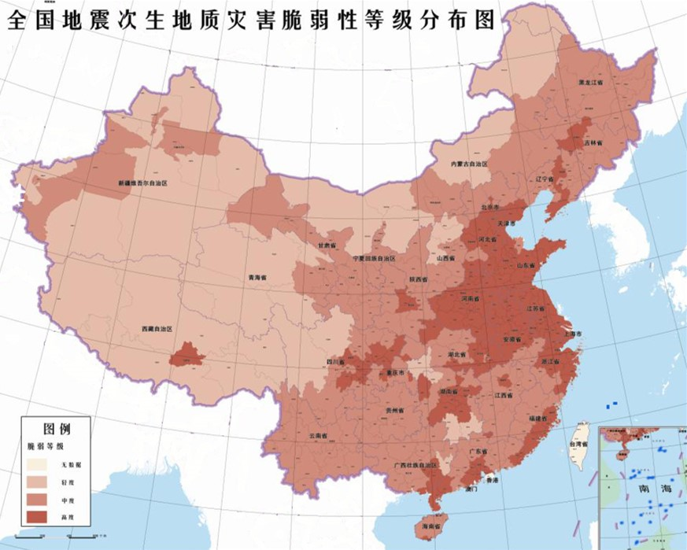

你了解地震吗？
地震（earthquake），又称地动、地振动，是地壳快速释放能量过程中造成的振动，期间会产生地震波的一种自然现象。
地球上板块与板块之间相互挤压碰撞，造成板块边沿及板块内部产生错动和破裂，是引起地震的主要原因。
地震开始发生的地点称为震源，震源正上方的地面称为震中。破坏性地震的地面振动最烈处称为极震区，极震区往往也就是震中所在的地区。
地震常常造成严重人员伤亡，能引起火灾、水灾、有毒气体泄漏、细菌及放射性物质扩散，还可能造成海啸、滑坡、崩塌、地裂缝等次生灾害。
据统计，地球上每年约发生500多万次地震，每天要发生上万次地震。其中绝大多数太小或太远，以至于人们感觉不到。
真正能对人类造成严重危害的地震大约有十几二十次，能造成特别严重灾害的地震大约有一两次。
人们感觉不到的地震，必须用地震仪才能记录下来。不同类型的地震仪能记录不同强度、不同远近的地震。
世界上运转着数以千计的各种地震仪器日夜监测着地震的动向。
当前的科技水平尚无法预测地震的到来，未来相当长的一段时间内，地震也是无法预测的。
所谓成功预测地震的例子，基本都是巧合。对于地震，我们更应该做的是提高建筑抗震等级、做好防御，而不是预测地震。
2023年一季度，我国大陆地区共发生4级以上地震22次。
地震的基础知识
地震位置
地球分为三层：中心层是地核，中间是地幔，外层是地壳。
地球的平均半径为6370公里左右，地壳厚度为35公里左右，大多数破坏性地震就发生在地壳内。
但地震不仅发生在地壳之中，也会发生在软流层当中。据地震部门测定，深源地震一般发生在地下300-700公里处。
目前为止，已知的最深的震源是720公里。从这一点来看，传统的板块挤压地层断裂学说并不能合理解释深源地震，
因为720公里深处并不存在固态物质。
地震成因
地球表层的岩石圈。地壳岩层受力后快速破裂错动引起地表振动或破坏就叫地震。
1. 由于地质构造活动引发的地震叫构造地震；
2. 由于火山活动造成的地震叫火山地震；
3. 固岩层（特别是石灰岩）塌陷引起的地震叫塌陷地震。
地震是一种极其普通和常见的一种自然现象，但由于地壳构造的复杂性和震源区的不可直观性，关于地震特别构造地震，
它是怎样孕育和发生的，其成因和机制是什么的问题，至今尚无完满的解答，但目前科学家比较公认的解释是构造地震是由地壳板块运动造成的。
由于地球在无休止地自转和公转，其内部物质也在不停地进行分异，所以，围绕在地球表面的地壳，
或者说岩石圈也在不断地生成、演变和运动，这便促成了全球性地壳构造运动。关于地壳构造和海陆变迁，科学家们经历了漫长的观察、描述和分析，
先后形成了不同的假说、构想和学说。板块构造学说又称新全球构造学说，则是形成较晚（上世纪60年代），已为广大地学工作者所接受的一个关于地壳构造运动的学说。
地震分类
根据发生的位置分类
板缘地震（板块边界地震）：
发生在板块边界上的地震，环太平洋地震带上绝大多数地震属于此类。
板内地震：
发生在板块内部的地震，如欧亚大陆内部（包括中国）的地震多属此类。
板内地震除与板块运动有关，还要受局部地质环境的影响，其发震的原因与规律比板缘地震更复杂。
火山地震：
是由火山爆发时所引起的能量冲击，而产生的地壳振动。
根据震动性质不同分类
天然地震：天然地震
人工地震：由爆破、核试验等人为因素引起的地面震动；
脉动：由于大气活动、海浪冲击等原因引起的地球表层的经常性微动。
按地震形成的原因分类
构造地震：
是由于岩层断裂，发生变位错动，在地质构造上发生巨大变化而产生的地震，所以叫做构造地震，也叫断裂地震。
火山地震：
是由火山爆发时所引起的能量冲击，而产生的地壳振动。火山地震有时也相当强烈。
但这种地震所波及的地区通常只限于火山附近的几十公里远的范围内，而且发生次数也较少，只占地震次数的7%左右，所造成的危害较轻。
陷落地震：
由于地层陷落引起的地震。这种地震发生的次数更少，只占地震总次数的3%左右，震级很小，影响范围有限，破坏也较小。
诱发地震：
在特定的地区因某种地壳外界因素诱发（如陨石坠落、水库蓄水、深井注水）而引起的地震。
人工地震：地下核爆炸、炸药爆破等人为引起的地面振动称为人工地震。人工地震是由人为活动引起的地震。
如工业爆破、地下核爆炸造成的振动；在深井中进行高压注水以及大水库蓄水后增加了地壳的压力，有时也会诱发地震。
根据震源深度分类
浅源地震：
震源深度小于70公里的地震，大多数破坏性地震是浅源地震。
中源地震：
震源深度为70～300公里。
深源地震：
震源深度在300公里以上的地震，到目前为止，世界上纪录到的最深地震的震源深度为786公里。
一年中，全球所有地震释放的能量约有85%来自浅源地震，12%来自中源地震，3%来自深源地震。
按地震的远近分类
地方震：震中距小于100公里的地震。
近震：震中距为100～1000公里。
远震：震中距大于1000公里的地震。
按震级大小分类
弱震：
震级小于3级的地震。
有感地震：
震级等于或大于3级、小于或等于4.5级的地震。
中强震：
震级大于4.5级，小于6级的地震。
强震：
震级等于或大于6级的地震，其中震级大于或等于8级的叫巨大地震。
按破坏程度分类
一般破坏性地震：
造成数人至数十人死亡，或直接经济损失在一亿元以下（含一亿元）的地震。
中等破坏性地震：
造成数十人至数百人死亡，或直接经济损失在一亿元以上（不含一亿元）、五亿元以下的地震。
严重破坏性地震。
人口稠密地区发生的七级以上地震、大中城市发生的六级以上地震，或者造成数百至数千人死亡，
或直接经济损失在五亿元以上、三十亿元以下的地震。
特大破坏性地震：
大中城市发生的七级以上地震，或造成万人以上死亡，或直接经济损失在三十亿元以上的地震。
构造地震的分类
孤立型地震：
有突出的主震，余震次数少、强度低；主震所释放的能量占全序列的99.9%以上；主震震级和最大余震相差2.4级以上。
主震——余震型地震：
主震非常突出，余震十分丰富；最大地震所释放的能量占全序列的90%以上；主震震级和最大余震相差0.7～2.4级。
双震型地震：
一次地震活动序列中，90%以上的能量主要由发生时间接近，地点接近，大小接近的两次地震释放。
震群型地震：
有两个以上大小相近的主震，余震十分丰富；主要能量通过多次震级相近的地震释放，最大地震所释放的能量占全序列的90%以下；
主震震级和最大余震相差0.7级以下。
传播方式
在地球内部传播的地震波称为体波，分为纵波和横波。
振动方向与传播方向一致的波为纵波（P波）——来自地下的纵波引起地面上下颠簸振动。
振动方向与传播方向垂直的波为横波（S波）——来自地下的横波能引起地面的水平晃动。
由于纵波在地球内部传播速度大于横波，所以地震时，纵波总是先到达地表，而横波总落后一步。
这样，发生较大的近震时，一般人们先感到上下颠簸，过数秒到十几秒后才感到有很强的水平晃动。横波是造成破坏的主要原因。
沿地面传播的地震波称为面波，分为勒夫波和瑞利波。
纵波：振动方向与波的传播方向一致的波，传播速度较快，到达地面时人感觉颠动，物体上下跳动。
横波：振动方向与波的传播方向垂直，传播速度比纵波慢，到达地面时人感觉摇晃，物体会来回摆动。
面波：当体波到达岩层界面或地表时，会产生沿界面或地表传播的幅度很大的波，称为面波。面波传播速度小于横波，所以跟在横波的后面。
震中震源
震源
地球内部直接产生破裂的地方称为震源，它是一个区域，但研究地震时常把它看成一个点。地面上正对着震源的那一点称为震中，它实际上也是一个区域。
震中
根据地震仪记录测定的震中称为微观震中，用经纬度表示；根据地震宏观调查所确定的震中称为宏观震中，
它是极震区（震中附近破坏最严重的地区）的几何中心，也用经纬度表示。由于方法不同，宏观震中与微观震中往往并不重合。
震中距
从震中到地面上任何一点的距离叫做震中距。同一个地震在不同的距离上观察，远近不同，叫法也不一样。
震源深度
从震源到地面的距离叫做震源深度。
极震区
震后破坏程度最严重的地区，极震区往往也就是震中所在的地区。
震级烈度
震级
1. 弱震震级小于3级。如果震源不是很浅，这种地震人们一般不易觉察。
2. 有感地震震级等于或大于3级、小于或等于4.5级。这种地震人们能够感觉到，但一般不会造成破坏。
3. 中强震震级大于4.5级、小于6级。属于可造成破坏的地震，但破坏轻重还与震源深度、震中距等多种因素有关。
4. 强震震级等于或大于6级。其中震级大于等于8级的又称为巨大地震。
5. 里氏规模4.5以上的地震可以在全球范围内监测到。
烈度
在中国地震烈度表上，对人的感觉、一般房屋震害程度和其他现象作了描述，可以作为确定烈度的基本依据。
影响烈度的因素有震级、震源深度、距震源的远近、地面状况和地层构造等。
一般情况下仅就烈度和震源、震级间的关系来说，震级越大震源越浅、烈度也越大。
一般震中区的破坏最重，烈度最高，这个烈度称为震中烈度。从震中向四周扩展，地震烈度逐渐减小。
所以，一次地震只有一个震级，但它所造成的破坏在不同的地区是不同的。即一次地震，可以划分出好几个烈度不同的地区。
这与一颗炸弹爆后，近处与远处破坏程度不同道理一样。炸弹的炸药量，好比是震级；炸弹对不同地点的破坏程度，好比是烈度。
烈度不仅跟震级有关，而且还跟震源深度、地表地质特征等有关。一般而言，震源浅、震级大的地震，破坏面积较小，但震中区破坏程度较重；
震源较深、震级大的地震，影响面积较大，而震中区烈度则较轻。
地震有哪些危害？
直接灾害破坏
地震直接灾害是地震的原生现象，如地震断层错动，以及地震波引起地面振动，所造成的灾害。
主要有：地面的破坏，建筑物与构筑物的破坏，山体等自然物的破坏（如滑坡、泥石流等），海啸、地光烧伤等。
地震时，最基本的现象是地面的连续振动，主要特征是明显的晃动。极震区的人在感到大的晃动之前，有时首先感到上下跳动。
因为地震波从地内向地面传来，纵波首先到达。横波接着产生大振幅的水平方向的晃动，是造成地震灾害的主要原因。
1960年智利大地震时，最大的晃动持续了3分钟。
地震造成的灾害首先是破坏房屋和构筑物，造成人畜的伤亡，如1976年中国河北唐山地震中，70%～80%的建筑物倒塌，人员伤亡惨重。
地震对自然界景观也有很大影响。最主要的后果是地面出现断层和地裂缝。
大地震的地表断层常绵延几十至几百千米，往往具有较明显的垂直错距和水平错距，能反映出震源处的构造变动特征（见浓尾大地震，旧金山大地震）。
但并不是所有的地表断裂都直接与震源的运动相联系，它们也可能是由于地震波造成的次生影响。
特别是地表沉积层较厚的地区，坡地边缘、河岸和道路两旁常出现地裂缝，这往往是由于地形因素，在一侧没有依托的条件下晃动使表土松垮和崩裂。
地震的晃动使表土下沉，浅层的地下水受挤压会沿地裂缝上升至地表，形成喷沙冒水现象。
大地震能使局部地形改观，或隆起，或沉降。使城乡道路坼裂、铁轨扭曲、桥梁折断。在现代化城市中，由于地下管道破裂和电缆被切断造成停水、停电和通讯受阻。
煤气、有毒气体和放射性物质泄漏可导致火灾和毒物、放射性污染等次生灾害。在山区，地震还能引起山崩和滑坡，常造成掩埋村镇的惨剧。
崩塌的山石堵塞江河，在上游形成地震湖。

次生灾害破坏
地震次生灾害是直接灾害发生后，破坏了自然或社会原有的平衡或稳定状态，从而引发出的灾害。
主要有：火灾、水灾、毒气泄漏、瘟疫等。其中火灾是次生灾害中最常见、最严重的。
火灾：地震火灾多是因房屋倒塌后火源失控引起的。由于震后消防系统受损，社会秩序混乱，火势不易得到有效控制，因而往往酿成大灾。
海啸：地震时海底地层发生断裂，部分地层出现猛烈上升或下沉，造成从海底到海面的整个水层发生剧烈“抖动”，这就是地震海啸。
瘟疫：强烈地震发生后，灾区水源、供水系统等遭到破坏或受到污染，灾区生活环境严重恶化，故极易造成疫病流行。社会条件的优劣与灾后疫病是否流行，关系极为密切。
滑坡和崩塌：这类地震的次生灾害主要发生在山区和塬区，由于地震的强烈振动，使得原已处于不稳定状态的山崖或塬坡发生崩塌或滑坡。这类次生灾害虽然是局部的，但往往是毁灭性的，使整村整户人财全被埋没。
水灾：地震引起水库、江湖决堤，或是由于山体崩塌堵塞河道造成水体溢出等，都可能造成地震水灾。
此外，社会经济技术的发展还带来新的继发性灾害，如通信事故、计算机事故等。这些灾害是否发生或灾害大小，往往与社会条件有着更为密切的关系。

破坏程度
地震灾害破坏程度，除了与震级大小有关外，还与震源深度、距震中远近、震中区的地质条件、建筑物的抗震性能、人们的防震抗震意识、应急措施和预报预防程度等有关。
地震成灾具有瞬时性：
地震在瞬间发生，地震作用的时间很短，最短十几秒，最长两三分钟就造成山崩地裂，房倒屋塌，使人猝不及防、措手不及。
人类辛勤建设的文明在瞬间毁灭，地震爆发的当时人们无法在短时间内组织有效的抗御行动。
地震造成伤亡大：
地震使大量房屋倒塌，是造成人员伤亡的元凶，尤其一些地震发生在人们熟睡的夜间。
据1988年“国际减轻自然灾害十年”专家组的不完全统计，二十世纪全球地震灾害死亡总人数超过120万人，其中伤亡人数最多的是1976年7月28日中国唐山7.8级大地震，死亡24.2万余人，重伤16.4万余人。
1900~1986年间地震死亡人数占在所有自然灾害死亡人数的58%，其中中国的地震死亡人数最多，占42%，这主要是因为以前中国的房屋抗震能力差，人口密集。
统计表明，约60%的死亡是抗震能力差的砖石房屋倒塌造成的。
科学避震
地震发生时，不论在室内还是室外，保持冷静并采取相关行动，是保护自己的最好方法
01 因地制宜 正确选择
根据自身环境及自身情况确定避震方法：
震时，每个人的处境和自身情况千差万别，避震方式不可能千篇一律。要因地制宜，没有一定之规。
例如，是跑出室外还是在室内避震，就要看客观条件：身处平房还是高层建筑内，房子是否坚固，室内有没有避震空间，室外是否安全，等等。
一旦发生地震，要保持镇静，不要慌乱，及时采取就近避震原则。在具有抗震能力的房屋内，应就近躲避。
在不具有抗震能力的房屋内，如能即刻跑出室外应及时逃往空旷地带，小心坠物。
合理利用地震预警信息：
接到地震预警后，不要惊慌、害怕，要快速而又详细的阅读预警信息，尔后及时采取相应避险措施。
我们无法简单地根据地震预警时间的长短，硬性规定该如何避险。
面对险情，人们需要根据地震级别、所处环境和自身情况等进行判断，选择合适的逃生措施：如及时地关闭煤气、电器，就近躲避等。
02 行动果断 切记犹豫
或就近躲避，或紧急撤离：
避震能否成功，就在千钧一发之间，容不得瞻前顾后，犹豫不决。如身处平房时进行避震，更要行动果断，或就近躲避，或紧急撤离，切勿往返。
有的人跑出危房后又转身回去救人，结果自己也被埋压，记住只有保护好自己，才有可能救助别人。
03 伏而待定 定而急出
伏地、遮挡、手抓牢：
我国古人秦大可在1556年陕西华县8级地震后，总结了“率然闻变，不可疾出，伏而待定，纵有覆巢，可翼完卵”的经验，也就是说，就近寻找安全地点，伏在地上等待地震结束最为安全。
这种避险方法在许多大地震中得到了验证。
确认地震晃动结束后，要及时撤离到安全的地方。
04 听从指挥 不可擅动
公共场所要听从指挥：
地震后，公共场所应立刻停止教学、生产、交通等活动，采用就近避震原则或听从相关责任人指令，安全有序的撤离。
在不了解公共场馆内逃生路线的情况下，若是擅自行动、盲目避震，只能招致更大的不幸。
05 小开间 近水源
室内较安全的避震地点：
开间小、有支撑物的房间，如卫生间；内承重墙墙角；震前准备的避震空间；牢固的桌下或床下；低矮、牢固的家具边等。
近水不近火：
地震避险时尽量靠近水源，不要接近明火。
地震发生时，房屋建筑破坏时会产生浓烈的烟尘，也可能发生火灾，亦或被困在建筑物中需要等待救援，这些情况都需要有水来湿润衣物或者饮用，因此，避险地点尽量靠近水源。
06 跑楼梯 忌电梯 莫跳楼
地震避险时要注意：
地震发生后，不可乘坐电梯，更不可以跳楼逃生，要选择安全通道迅速撤离。
如果震时在电梯里，应尽快离开；即使住在一、二层楼，也不要选择跳楼逃生，跳楼不仅会造成骨折等伤害，还会被高处坠落的重物砸伤。